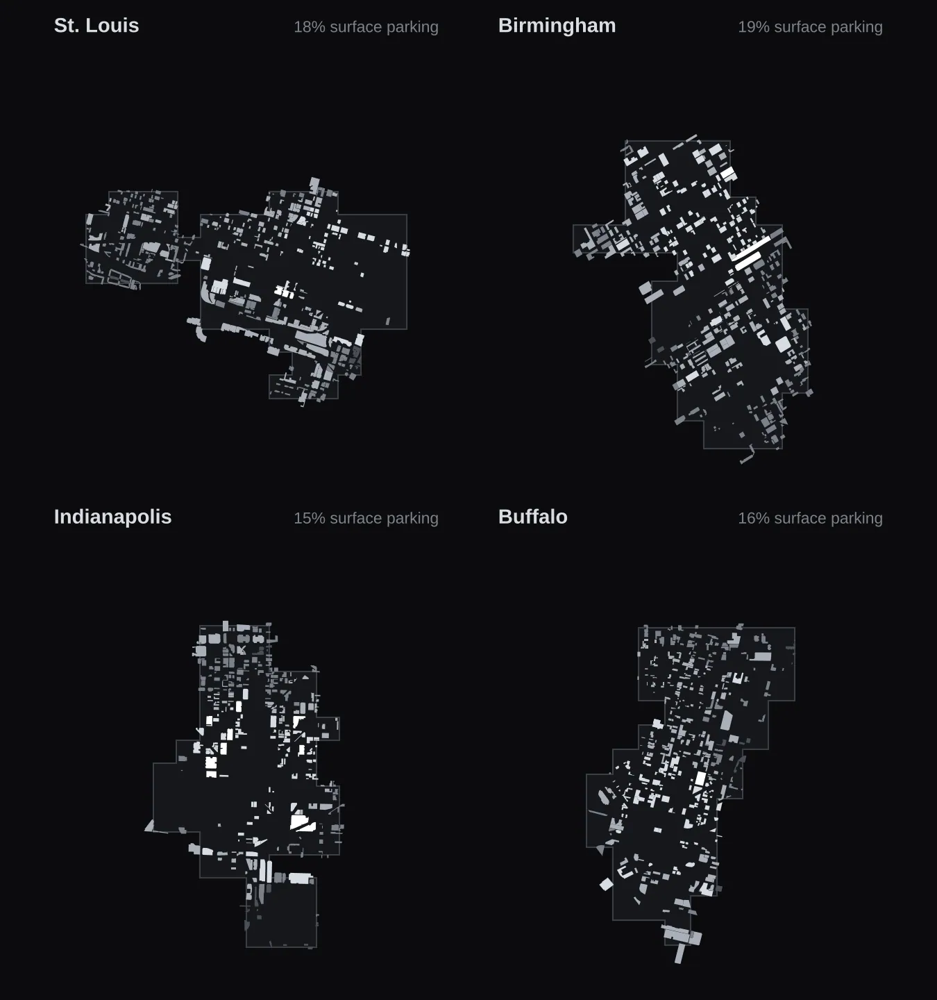
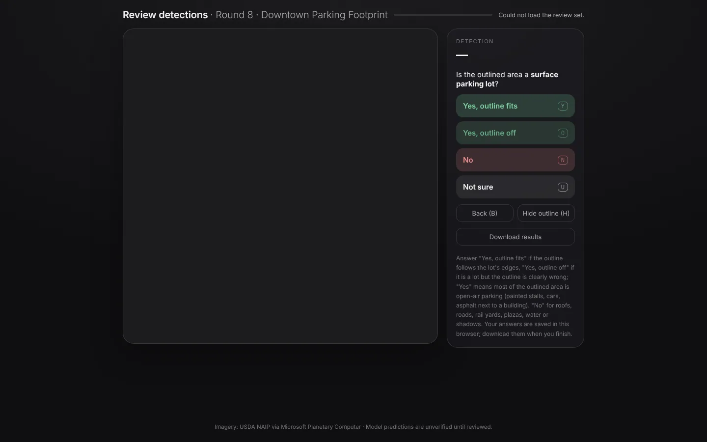

01
Downtown Parking Footprint
How much downtown land do U.S. cities give to surface parking, and which lots could become something else? A web app that measures every mapped lot in 50 downtowns, screens each one, and uses a U-Net model to find lots missing from OpenStreetMap.
PythonU-Net · TensorFlow.jsMapLibreLODES · OSM · NAIPSolo project


50downtowns, one boundary rule
13,346surface lots mapped
5,407acres of surface parking
983unmapped lots found by AI